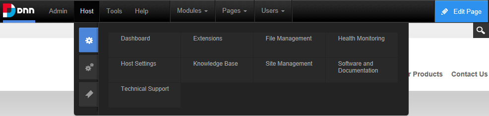
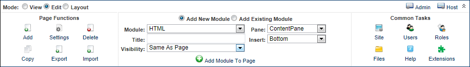

RibbonBar Control Panel with Admin menu displayed (DNN Platform)
DNN comes with a choice of three Control Panels called the ControlBar, RibbonBar and the Iconbar that enable Content Editors (optional), Page Editors, Administrators and SuperUsers to access a range of page management tools and site administrative tasks.

ControlBar Control Panel with Host menu displayed (DNN Platform)
RibbonBar Control Panel with Admin menu displayed (DNN Platform)

Iconbar Control Panel